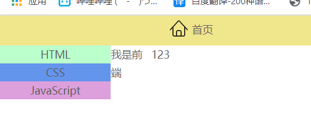

模板语法
基本结构
xxxxxxxxxx231<html lang="en">34<head>5 <meta charset="UTF-8">6 <meta name="viewport" content="width=device-width, initial-scale=1.0">7 <title>Document</title>8 <script src="https://cdn.jsdelivr.net/npm/vue/dist/vue.js"></script>9</head>10<body>11 <div id="app">12 {{ message }}13 </div>14 <script>15 var app = new Vue({16 el: '#app',17 data: {18 message: 'Hello World!'19 }20 })21 </script>22</body>23</html>moustache语法
将html中的变量用花括号圈起来，在vue里面进行赋值，这种动态数据绑定的方法，就算moustache语法。因为俩个大括号很像胡子？？？？？？我并不理解就是了。
JavaScript语法支持
在花括号内部，vue支持使用JavaScript语法。
- 四则运算
xxxxxxxxxx111<div id="app">2 <div>0{{num+1}}</div>3</div>4<script>5 var app = new Vue({6 el: '#app',7 data: {8 num:7209 }10 })11</script>- 三元表达式
xxxxxxxxxx111<div id="app">2 <div>我喜欢{{lolisuki?"萝莉":"幼女"}}</div>3</div>4<script>5 var app = new Vue({6 el: '#app',7 data: {8 lolisuki:true9 }10 })11</script>- 调用方法（以字符串为例）
xxxxxxxxxx121<div id="app">2 <!--把字符串变成大写-->3 <div>{{msg.toUpperCase()}}</div>4</div>5<script>6 var app = new Vue({7 el: '#app',8 data: {9 msg:"abcdefg"10 }11 })12</script>生命周期

1.beforeCreate
2.created
当调用这个函数的对象创建完毕时，立刻回调这个函数。
指令
文本填充 v-text
v-text会直接替换标签内的全部内容，类似于花括号语法，但是这个是全部替换，那个是指定替换。
xxxxxxxxxx111<div id="app">2 <div v-text="msg">test</div>3</div>4<script>5 var app = new Vue({6 el: '#app',7 data: {8 msg:"hello world!!"9 }10 })11</script>
数据绑定 v-bind
v-bind可以动态绑定一个类或者动态绑定样式。简写时前面用冒号
绑定class
绑定单个class
xxxxxxxxxx211<!-- head标签内 -->2<style type="text/css">3 .active{4 width: 100px;5 height: 100px;6 background-color: #42B983;7 }8</style>910<!-- /body标签内 -->11<div id="app">12 <div v-bind:class="{ active: isActive }"></div>13</div>14<script>15 var app = new Vue({16 el: '#app',17 data: {18 isActive: true19 }20 })21</script>绑定多个动态class
xxxxxxxxxx251<!-- head标签内 -->2<style type="text/css">3 .active{4 width: 100px;5 height: 100px;6 background-color: #42B983;7 }8 .big-font{9 font-size: larger;10 } 11</style>1213<!-- /body标签内 -->14<div id="app">15 <div v-bind:class="[{ active: isActive },fontClass]">绑定class</div>16</div>17<script>18 var app = new Vue({19 el: '#app',20 data: {21 isActive: true,22 fontClass:"big-font"23 }24 })25</script>
绑定style
xxxxxxxxxx111<div id="app">2 <div v-bind:style="{color:colorBind}">绑定style</div>3</div>4<script>5 var app = new Vue({6 el: '#app',7 data: {8 colorBind: "red",9 }10 })11</script>注意!如果绑定的样式含有短线,那么就要替换成对应的驼峰法。
例如：background-color ->backgroundColor
双向数据绑定 v-model
与checkbox结合
xxxxxxxxxx241<p id="app">2 <!-- 单选框 -->3 <input type="checkbox" v-model="isAgree"> 同意协议4 <button v-bind:disabled="!isAgree">下一步</button>5 <br />6 <br />7 <br />8 <!-- 复选框 -->9 <input type="checkbox" v-model="hobby" value="傲娇"> 傲娇10 <input type="checkbox" v-model="hobby" value="天然呆"> 天然呆11 <input type="checkbox" v-model="hobby" value="病娇"> 病娇12 <input type="checkbox" v-model="hobby" value="三无"> 三无13 <br />14 <span>你喜欢的萝莉类型为:{{hobby}}</span>15</p>16<script>17 const vue = new Vue({18 el: "#app",19 data: {20 isAgree: false,21 hobby: [],22 },23 })24</script>
与radio结合
v-model其实和value绑定, v-model="sex"就是value为sex属性.
什么意思呢,就是说点击这个input之后,浏览器就会去找v-model绑定的元素是谁,一看发现是sex,然后就会把value的值赋值给sex,最后根据此时sex的值去判断到底选中谁.所以说假如默认赋值为''男"的话,浏览器先开始就会选中value为男的选项.
如果默认sex写的在value里面没有,那么先开始谁都不会选中,点击一次之后,value的值传了进来,之后就一切正常了.
xxxxxxxxxx151<p id="app">2 <input type="radio" value="男" v-model="sex">男3 <input type="radio" value="女" v-model="sex"> 女4 <br />5 <span>{{sex}}</span>6</p>7<script>8 const vue = new Vue({9 el: "#app",10 data: {11 sex: '男',12 //sex:'秀吉',13 },14 })15</script>修饰符
xxxxxxxxxx281 <p id="app">2 <span>lazy可以让数据在失去焦点或者回车才会更新</span>3 <br/>4 <input type="text" v-model.lazy="message" >5 <span>{{message}}</span>6 <br/>7 <span>number可以让数据变为number类型,如果你希望如此</span>8 <br/>9 <input type="text" v-model.number="message2" >10 <span>{{message2}}</span>11 <br/>12 <span>trim可以让数据头尾去除空格</span>13 <br/>14 <input type="text" v-model.trim="message3" >15 <span>{{message3}}</span>16 <br/>17 </p>1819 <script>20 const vue=new Vue({21 el:"#app",22 data:{23 message:"123",24 message2:345,25 message3:"",26 },27 })28 </script>
条件渲染 v-if 和 v-show
列表循环 v-for
数组循环
对于普通数组而言，v-for就类似于JavaScript中的foreach语法，直接遍历每一项。
xxxxxxxxxx151<div id="app">2 <ul>3 <li v-for="item in Language" :key="item">4 {{item}}5 </li>6 </ul>7</div>8<script>9 var app = new Vue({10 el: '#app',11 data: {12 Language:["java","c++","python","c#"]13 }14 })15</script>但是对于对象数组而言，直接输出并不是一个好主意。
xxxxxxxxxx211<div id="app">2 <ul>3 <li v-for="item in Language" :key="item">4 {{item}}5 </li>6 </ul>7</div>8<script>9 var app = new Vue({10 el: '#app',11 data: {12 Language:[{name:"java"},{name:"c++"},{name:"python"},{name:"c#"}]13 }14 })15</script>1617<!--结果会变成这样：-->18{ "name": "java" }19{ "name": "c++" }20{ "name": "python" }21{ "name": "c#" }我们可以使用访问属性的方式来遍历
xxxxxxxxxx31<li v-for="item in Language" :key="item">2 {{item.name}}3</li>v-for还支持打印数组的下标
xxxxxxxxxx151<div id="app">2 <ul>3 <li v-for="(item,index) in Language" :key="index">4 第{{index}}个元素：{{item}}5 </li>6 </ul>7</div>8<script>9 var app = new Vue({10 el: '#app',11 data: {12 Language:["java","c++","python","c#"]13 }14 })vue15</script>对象循环
类似于数组循环，但是在for的时候，访问的就不是属性了。而是键值对。
xxxxxxxxxx191<div id="app">2 <ul>3 <li v-for="(value,key) in loli" :key="key">4 {{key}}为：{{value}}5 </li>6 </ul>7</div>8<script>9 var app = new Vue({10 el: '#app',11 data: {12 loli:{13 name:"时雨",14 age:14,15 height:15016 }17 }18 })19</script>key
key是用来提高列表渲染效率的，必须要选择唯一的那个值。在数组中，index是唯一的，那么就把index设为key。在对象中，键是唯一的，就把key设为key。
事件处理 v-on
v-on用于绑定事件处理函数，在JavaScript里面就是onclick,onmousedown之类的，但是vue里面不加on。简写时前面用@
xxxxxxxxxx181<body>2 <div id="app">3 <p>{{ message }}</p>4 <button v-on:click="reverseMessage">反转消息</button>5 </div>6<script>7var app5 = new Vue({8 el: '#app',9 data: {10 message: 'Hello Vue.js!'11 },12 methods: {13 reverseMessage: function () {14 this.message = this.message.split('').reverse().join('')15 }16 }17})18</script>
v-cloak
VUE渲染的时候，首先会把html页面全显示到网页上，之后再进行替换。这就会导致，如果用户的计算机比较慢，就会直接看到VUE渲染前的页面，体验很差。为了避免这种情况，可以使用v-cloak指令，这个指令首先会把页面隐藏，然后在内存中把页面替换好之后再显示。
使用v-cloak需要先在head里面设置样式才能使用。
xxxxxxxxxx181<!--head标签里面-->2<style type="text/css">3 [v-cloak]{4 display: none;5 }6</style>7<!--body标签里面-->8<div id="app">9 <div v-cloak>{{msg}}</div>10</div>11<script>12 var app = new Vue({13 el: '#app',14 data: {15 msg:"hello world!"16 }17 })18</script>v-once
如果只想让某一个标签只被渲染第一次，也就是说绑定的值就算变化了，这个标签内容也不会改变
xxxxxxxxxx121<div id="app">2 <div v-once>{{msg}}</div>3</div>4<script>5 var app = new Vue({6 el: '#app',7 data: {8 msg:"hello world!!!!"9 }10 })11 app.msg="fuck you world!";12</script>可以看到，虽然修改了msg的值，但是v-once作用下，只保留了第一次渲染的值。
指令修饰符
组件化
建立全局组件
- Vue.component("name",{})方法来注册组件，第一个参数是组件名字，第二个是组件的定义，其中最重要的就是template，它规定了组件的结构内容。
- 在需要使用的地方直接用组件名的标签就可以了。
xxxxxxxxxx251<head>3 <meta charset="UTF-8">4 <script src="https://cdn.jsdelivr.net/npm/vue/dist/vue.js"></script>5 <title>Document</title>6</head>7<body>8 <div id="app">9 <span>Vue</span>10 <cpn></cpn>11 </div>12 <script>13 //注册全局组件14 //组件名字就是cpn，可以用<cpn></cpn>来使用15 Vue.component('cpn',{16 //模板的内容17 template:'<div><span>我是组件</span></div>',18 })1920 const vue = new Vue({21 el:"#app",22 })23 </script>24</body>25</html>组件的数据
vue中，除了vue这个大的父组件可以直接用data:{}的语法，剩下的组件都必须使用函数的语法。因为组件之间彼此是独立的，而不写函数的话，默认定义的都是全局变量。这就导致所有组件共享数据，不安全。
而写成函数的形式，数据就会被函数封装成局部变量，这样就可以各用各的数据了。
xxxxxxxxxx51data:function() {2 return {3 count: 04 }5}
组件抽离
1.抽离template
因为template里面是一个字符串，使用可读性很差，还没有代码提示，所以可以把这部分抽离成html代码，提高可读性。html提供了template标签，来定义模板，要注意，模板里面必须用一个div来包含所有代码。
xxxxxxxxxx211<body>2 <div id="app">3 <span>Vue</span>4 <cpn></cpn>5 </div>6 <template id="tep">7 <div>8 <span>我是组件</span>9 </div>10 </template>11 12 <script>13 Vue.component('cpn', {14 template: '#tep',15 })1617 const vue = new Vue({18 el: "#app",19 })20 </script>21</body>2.抽离component
现在虽然简单多了，但是还是比较麻烦。每次都要注册vue的全局组件，我们可以考虑注册局部组件减少代码量。
- 首先建立一个对象cpn，把组件的内容写到对象里面
- 在父组件vue里面声明组件
- 在html中使用
xxxxxxxxxx221<div id="app">2 <span>Vue</span>3 <cpn></cpn>4</div>5<template id="tep">6 <div>7 <span>我是组件</span>8 </div>9</template>1011<script>12 const cpn={13 template: '#tep',14 }1516 const vue = new Vue({17 el: "#app",18 components:{19 cpn20 }21 })22</script>
子组件通信父组件
子组件给父组件传递数据，使用的是this.$emit("对外展示的方法名",数据);，这样就把子组件的数据对外传递了。那该如何接收呢？在父组件内，用v-on来绑定刚才的方法名，然后调用父组件的方法。此时父组件的参数就是子组件的数据了。
xxxxxxxxxx561<html lang="en">34<head>5 <meta charset="UTF-8">6 <script src="https://cdn.jsdelivr.net/npm/vue/dist/vue.js"></script>7 <title>Document</title>8</head>910<body>11 <div id="app">12 <span>我是父组件Vue</span>13 <cvue v-on:vue-click="showChildMessage"></cvue>14 </div>1516 <template id="cvue">17 <div>18 <button v-on:click="vueClick">我是子组件</button>19 </div>20 </template>212223 <script>24 //子组件25 const cvue = {26 template: '#cvue',27 data() {28 return {29 lolis:["傲娇","病娇","天然呆"]30 }31 },32 methods: {33 vueClick(){34 //用$emit来暴露数据和接收数据的方法35 this.$emit("vue-click",this.lolis);36 }37 },38 }394041 const vue = new Vue({42 el: "#app",43 components: {44 cvue,45 },46 methods: {47 //父组件的参数就算子组件暴露的数据48 showChildMessage(lolis){49 alert(lolis);50 }51 },52 })53 </script>54</body>5556</html>父组件通信子组件
父组件不能直接把数据给子组件，而是通过父组件给子组件的prop属性传递数据来间接实现。那首先就算给子组件建立prop属性，之后用v-bind把子组件的prop数据和父组件绑定。
xxxxxxxxxx4613<head>4 <meta charset="UTF-8">5 <script src="https://cdn.jsdelivr.net/npm/vue/dist/vue.js"></script>6 <title>Document</title>7</head>89<body>10 <div id="app">11 <span>我是父组件Vue</span>12 <cvue v-bind:cmessage="message"></cvue>13 </div>1415 <template id="cvue">16 <div>17 <span>我是子组件</span>18 </div>19 </template>202122 <script>23 const cvue = {24 template: '#cvue',25 props: {26 cmessage:{27 type:String,28 default:"默认值",29 }30 },31 }323334 const vue = new Vue({35 el: "#app",36 data: {37 message: "hello world",38 },39 components: {40 cvue,41 }42 })43 </script>44</body>4546</html>插槽
普通插槽
对于template的模板来说，如果一次性写死，有可能造成代码难以复用，所以把这些模板写的越抽象，日后功能就会越强大。template就提供了这样的功能，也就是插槽。
使用方法其实非常简单，就是在template里面加一个slot标签，表示这个可以被替换。
我这个例子里面写了一个span标签，就表示默认情况下插入这个萝莉span，如果在html中你插入了其他的数据，那么就会替换我原来的值。这个<span>萝莉</span>，就是默认值。
xxxxxxxxxx301<body>2 <div id="app">3 <cvue></cvue>4 <cvue><span>幼女</span></cvue>5 </div>67 <template id="cvue">8 <div>9 <span>10 我喜欢：11 <slot><span>萝莉</span></slot>12 </span>13 </div>14 </template>151617 <script>18 const cvue = {19 template: '#cvue',20 }212223 const vue = new Vue({24 el: "#app",25 components: {26 cvue,27 }28 })29 </script>30</body>具名插槽
在开发中，一个模板里面其实可能出现多个插槽，如果还是像刚才一样直接插入，可能会导致二义性，也就是分不清到底是给谁插的。为了避免这种情况，vue提供了具名插槽。
具名插槽使用起来也很简单，首先给slot起名字，使用的时候用slot属性去找对应的name就可以了。
xxxxxxxxxx311<body>2 <div id="app">3 <cvue>4 <span slot="first">身娇</span>5 <span slot="second">体柔</span>6 <span slot="third">易推倒</span>7 </cvue>8 </div>910 <template id="cvue">11 <div>12 <div>萝莉有三好</div>13 1.<slot name="first"></slot>14 2.<slot name="second"></slot>15 3.<slot name="third"></slot>16 </div>17 </template>181920 <script>21 const cvue = {22 template: '#cvue',23 }24 const vue = new Vue({25 el: "#app",26 components: {27 cvue,28 }29 })30 </script>31</body>
webpack
webpack是一个JavaScript的静态打包工具，webpack会把你写的代码进行打包，把ES6，commonJS等浏览器可能不支持的语法转化为ES5，确保所有浏览器都支持。非常非常方便，再也不用考虑兼容。
webpack是我们面向正式项目开发的第一步。
如果下面的看不懂，建议先去看看node的模块化。
安装
首先得要有node的环境，没有的去看我node的教程。然后安装 webpack和webpack-cli
先介绍一下安装类型
xxxxxxxxxx41npm install webpack -g //全局安装2npm install webpack --save-dev // 项目内局部安装3//还可以指定版本号4npm install webpack@3.6.0 --save-dev挑一个进行安装，我的如下
xxxxxxxxxx11npm install webpack webpack-cli --save-dev
打包与运行
首先初始化环境，在项目根目录运行
xxxxxxxxxx11npm init -y之后打包，默认采用最新的版本命令，如果是4.0之前的webpack版本，请去掉-o
xxxxxxxxxx31webpack 要打包文件的路径 -o 目标路径\文件名字2//我的代码如下3webpack .\src\main.js -o .\dist\bundle.js这时候可能会出现错误：
xxxxxxxxxx21webpack : File C:\Users\17966\AppData\Roaming\npm\webpack.ps1 cannot be loaded because running scripts is disabled on 2this system. For more information, see about_Execution_Policies at https:/go.microsoft.com/fwlink/?LinkID=135170.这是因为没有开启权限，用powershell开启一下权限就可以了。
在powershell里面输入：之后A就可以了。
xxxxxxxxxx11set-ExecutionPolicy RemoteSigned还可以再输入下面的指令确认
xxxxxxxxxx11get-ExecutionPolicy运行就很简单了，建一个index.html，引入打包后的js文件
xxxxxxxxxx91<head>3 <meta charset="UTF-8">4 <title>Document</title>5 <script src="./dist/bundle.js"></script>6</head>7<body>8</body>9</html>
配置
webpack.config.js
这个是需要我们自己创建的一个配置文件。如果每次都要用刚才那一大串命令来打包，未免太麻烦了，也没有一个更加简单的方法呢？仅仅输入webpack就可以执行上述的命令。当然可以了，这时候我们只需要把命令都配置进webpack.config.js里面，就可以用webpack来简化命令了。
首先需要指定一个入口的main.js文件，这个是用的相对路径，比较好处理。之后还有一个输出打包文件的路径，这个需要绝对路径，我们可以用node里面的path模块来进行绝对路径的拼接。
xxxxxxxxxx121var path = require("path");2// npm init3//配置之后自动打包4module.exports = {5 entry: "./src/main.js",6 output: {7 //打包路径8 path: path.resolve(__dirname, "dist"),9 //文件名10 filename: "bundle.js",11 }12}package.json
其实在实际开发中，我们都是用npm run build来打包。那如何把这个npm的命令和webpack的命令结合起来呢？
首先我们要知道npm run xxx是什么意思，其实很简单，如果在命令行输入这个命令，那么编译器就会去寻找package.json文件中的"scripts"键，也就是属性名，然后去寻找里面的xxx命令并运行。也就是说，如果想要执行npm run build，其实就是在package.json中的script里面配置一个build属性就行了。
xxxxxxxxxx41 "scripts": {2 "test": "echo \"Error: no test specified\" && exit 1",3 "build": "webpack"4 },之后就可以用npm run build命令执行打包了。
xxxxxxxxxx11npm run build配置这个好处在于，这个命令会调用局部的webpack指令，也就是位于，而不是全局的，可以防止全局版本和局部版本不兼容的bug。
文件结构
我们既然开始模块化开发了，那么就要有一套严格的代码标准。以确保可读性和重用。
根目录
dist：打包好的文件，这个是放到服务器上的最终代码
src：源代码，你写的都在这里
- CSS文件夹：存的样式文件
- JS文件夹：存的各种js代码
- VUE文件夹：存放各种vue文件
- main.js：入口js文件，链接了各种js文件，这种入口文件就单独拿出来，不要放到文件夹里面。
index.html：主html文件，核心文件。
loader
刚才webpack的命令只能打包js和json，如果只是这样就太鸡肋了。所以肯定还有别的技术来打包其他的文件。这种技术就是loader。
css loader
css可以来打包css文件，需要安装css-loader和style-loader，css-loader负责加载样式，style-loader负责将样式加入DOM中，缺一不可。
xxxxxxxxxx11npm install css-loader style-loader --save-dev之后需要配置webpack.config.js
xxxxxxxxxx151module.exports = {2 entry: "./src/main.js",3 output: {4 path: path.resolve(__dirname, "dist"),5 filename: "bundle.js"6 },7 module: {8 rules: [9 {10 test: /\.css$/,11 use: ["style-loader","css-loader"]12 }13 ]14 }15}注意use里面的顺序不能更改！！因为loader是从右往左加载的，所以要把css-loader写在右边。
使用时直接在main.js里面require就行了。
vue loader
这个在后面会说到，看到后面的时候可以回到前面来看，或者复习用。
首先是安装：
vue-loader用于加载vue文件，vue-template-compiler用于编译vue文件。
xxxxxxxxxx11npm install vue-loader vue-template-compiler --save-dev然后是配置：
xxxxxxxxxx41{2 test: /\.vue$/,3 loader:"vue-loader",4}然后你会发现还是报错，这是因为Vue Loader v15 现在需要配合一个 webpack 插件才能正确使用，所以还要配置下面的部分：
xxxxxxxxxx91// webpack.config.js2const VueLoaderPlugin = require('vue-loader/lib/plugin')34module.exports = {5 // ...6 plugins: [7 new VueLoaderPlugin()8 ]9}
vue与webpack
安装与配置
这个是运行依赖的，因为项目写好后运行也是需要用vue支持的。而webpack仅仅是打包时要用到。
xxxxxxxxxx11npm install vue --save之后在webpack.config.js中添加，因为vue版本很多，默认的版本是仅仅运行时依赖，这就会导致无法使用template，所以要修改默认版本。
xxxxxxxxxx51 resolve:{2 alias:{3 "vue$":"vue/dist/vue.esm.js",4 }5 },之后切记，script要放在vue挂载标签的下面！！！！，因为页面加载的时候是安装顺序执行的，如果像以前一样放在head里面，就导致渲染msg的时候，msg还没有加载出来。跟之前学DOM一样的原理。
xxxxxxxxxx71<!--index.html-->2<body>3 <div id="app">4 {{msg}}5 </div>6 <script src="./dist//bundle.js"></script>7</body>xxxxxxxxxx101//main.js2import Vue from 'vue'34var app = new Vue({5 el: '#app',6 data: {7 msg: 'Hello Vue!'8 }9})10组件抽离
之前我们已经学过一次组建抽离了，但是这次我们是基于webpack进行的更加抽象的抽离。
抽离index.html
目前我们的index.html里面还是有实际的结构和数据，<div id="app">{{msg}}</div>，这个对于模板化开发来说实在是太不像样子，所以我们首先要把主html的内容抽出来。
vue提供了这样的方法，vue也是一个组件，是所有组件的父组件。所以vue也会有template属性，这个template会在编译时直接替换el挂载点所在标签的全部内容。也就是说，vue内定义的template会直接替换<div id="app">{{msg}}</div>。
这样一来，我们就可以直接把index.html中大大简化，也就是说只保留<div id="app"></div>，剩下的全部在main.js实现
xxxxxxxxxx51<!--index.html-->2<body>3 <div id="app"></div>4 <script src="./dist//bundle.js"></script>5</body>xxxxxxxxxx131//main.js2import Vue from 'vue'34var app = new Vue({5 el: '#app',6 template: ` 7<div id="app">8 {{msg}}9</div>`,10 data: {11 msg: 'Hello Vue!'12 }13})抽离main.js
现在index.html简单了，但是main.js却复杂了，但是我们之前已经学过了如何抽离template，所以其实main.js非常好模板化。
- 把vue中的template抽成组件
- 在vue的components中注册
- 在template中直接把注册好的组件写上，替换挂载点的内容。
xxxxxxxxxx201import Vue from 'vue'2const App ={3 template: ` 4 <div id="app">5 {{msg}}6 </div>`,7 data() {8 return {9 msg: 'Hello Vue!'10 }11 },12}13var app = new Vue({14 el: '#app',15 template: `<App/>`,16 components:{17 App18 }19})20抽离到.vue文件
这时候就到了另一个重点了，我们之前抽离template是直接放到html里面的，现在我这个main.js是一个完完全全的js文件，抽不出来，该怎么办呢？？？其实很容易想到，抽到另一个html文件不就可以了？虽然可以，但是这样就让文件彼此逻辑太混乱了，我这个template,data,style等文件明显就是一体的，强行抽开不太合适，怎么办呢？vue的设计大佬们引出了一个vue文件，用于集合上述的格式。
在VUE文件夹里面建立一个App.vue文件，然后把刚才那个App移植到APP.vue文件里面
xxxxxxxxxx211<!-- App.vue -->2<template>3 <div>4 5 </div>6</template>78<script>9 export default {10 name: "App",11 data() {12 return {13 msg: "hello VUE！",14 }15 },16 };17</script>1819<style>20</style>21然后main.js里面就只用引入App就可以了
xxxxxxxxxx101//main.js2import Vue from 'vue'3import App from "./VUE/App.vue"4var app = new Vue({5 el: '#app',6 template: `<App/>`,7 components:{8 App9 }10})插件
插件是用于拓展webpack功能的，在webpack.config.js中的plugin中使用，一般来说按需添加。
这里以一个版权插件为例：
xxxxxxxxxx91// webpack.config.js2const webpack = require("webpack")34module.exports = {5 // ...6 plugins: [7 new webpack.BannerPlugin("版权归本人所有")8 ]9}之后可以发现在bundle.js里面多了一个注释，里面写着你的版权信息。
vue-cli
CLI是Command-Line Interface，翻译为命令行界面,但是俗称脚手架。CLI可以快速搭建Vue开发环境以及对应的webpack配置。
安装
首先需要node和webpack环境。之后全局安装。
xxxxxxxxxx11npm install -g @vue/cli最后可以用大写-V查看版本号。
xxxxxxxxxx11vue -V但是我们这个安装的默认最高版本，所以导致旧版的项目可能不兼容，所以还要安装一下旧版本的模板。
xxxxxxxxxx11npm install @vue/cli -init -g项目创建与运行
不同版本的创建命令不一样，需要特别注意：
xxxxxxxxxx51//cli22vue init webpack 项目名34//cli3及以上5vue create 项目名以cli3为例，输入指令以后会出现下面的提示
xxxxxxxxxx41? Please pick a preset: (Use arrow keys)2> Default ([Vue 2] babel, eslint)3 Default (Vue 3 Preview) ([Vue 3] babel, eslint) 4 Manually select features方向键选择Manually select features，然后回车。接下来出现这个。
注释是我加的。
xxxxxxxxxx121? Please pick a preset: Manually select features2? Check the features needed for your project: (Press <space> to select, <a> to toggle all, <i> to invert selection)3 (*) Choose Vue version //自己选vue版本4 (*) Babel //es6转es55>( ) TypeScript //支持typescript6 ( ) Progressive Web App (PWA) Support //先进网络应用支持7 ( ) Router //vue静态路由8 ( ) Vuex //vuex9 ( ) CSS Pre-processors //css预处理器10 (*) Linter / Formatter //ESlint严格语法标准，别选11 ( ) Unit Testing //单元测试12 ( ) E2E Testing //端到端测试之后出现这个，选第一个
xxxxxxxxxx31? Where do you prefer placing config for Babel, ESLint, etc.? (Use arrow keys) 2> In dedicated config files //独立配置文件3 In package.json //全放到package.json最后，是否把刚才的设置保存下来？目前建议选N。
xxxxxxxxxx11Save this as a preset for future projects? (y/N)如果不小心保存了，在哪里删呢？
C:\Users\用户名 里面有一个.vuerc文件，里面的presets就保存了你的配置，删掉presets里面的内容就行了。
最后使用serve运行
xxxxxxxxxx11npm run serve想要打包项目，使用
xxxxxxxxxx11 npm run build具体在package.json中都有写到。
目录结构
- node_modules：通过npm安装的一大推包
- public：公用的文件，最后直接原封不动封进dist文件夹
- src：源代码
- .browserslistrc：浏览器配置
- .gitignore：git的配置，选择上传git时忽略哪些文件
- babel.config.js：不懂
- package-lock.json：记录着各个插件的版本信息
- package.json：主要配置，以后经常要写
- README.md：记录版权信息，使用方法，作者吐槽什么什么的，没有固定用法。
vue ui
cli3以上版本超级无敌牛逼的东西，也就是可视化配置，再也不需要去手动改json了，直接可视化全自动操作，我爱死这个东西了。
开启方法很简单：
xxxxxxxxxx11vue uivue-router
这个router并不是路由器，而是指前端的静态路由。
安装
xxxxxxxxxx11npm install vue-router --save或者直接在vue ui安装，或者一开始安装cli的时候就把router选上。
建议去vue ui里面安装，vue-router属于插件，直接去插件里面安装。
路由映射的配置
在router文件夹下的index.js文件配置，这个是注册路由的。
xxxxxxxxxx131import Home from '../views/Home.vue'2const routes = [3 {4 path: '/',5 name: 'Home',6 component: Home7 },8 {9 path: '/about',10 name: 'About',11 component: () => import(/* webpackChunkName: "about" */ '../views/About.vue')12 }13]之后在App.vue里面写上注册过路由的组件，不过直接用肯定没有效果啦，vue提供了一个`<router-link>标签，便于实现路由跳转，这个标签里面有一个to属性，写要转去的url。最后一定要加上<router-view/>，以便显示路由的内容。
xxxxxxxxxx71<template>2 <div id="nav">3 <router-link to="/">Home</router-link> |4 <router-link to="/about">About</router-link>5 </div>6 <router-view/>7</template>代码控制路由跳转
router-link是vue自己封装的组件，但是我们有时候并不想用这种固定的方式来跳转路由，这时候我们就可以手动用JS来跳转。比如可以写一个v-on来绑定一个响应函数，里面写上
xxxxxxxxxx31itemClick(){2 this.$router.push('需要跳转的url')3}这个方法会让你的浏览器加载下一个url，也就是说浏览记录里面可能会有一大堆无用的记录，建议换成下面的。
xxxxxxxxxx31itemClick(){2 this.$router.replace('需要跳转的url')3}如果是新版的cli，点两次可能会报错，这是因为新版的router重写了push方法，导致重复跳转时会报错。这时只需要在router下的index.js里面加上这个代码，直接粘过去就行。
xxxxxxxxxx141//重写push和replace方法，防止路由重复跳转报错。2import VueRouter from "vue-router";34//push5const VueRouterPush = VueRouter.prototype.push6VueRouter.prototype.push = function push (to) {7 return VueRouterPush.call(this, to).catch(err => err)8}910//replace11const VueRouterReplace = VueRouter.prototype.replace12VueRouter.prototype.replace = function replace (to) {13 return VueRouterReplace.call(this, to).catch(err => err)14}
路由重定向
一般来说，我们打开网站，都是默认在首页。这个就是靠路由默认跳转到首页来实现的，如何做到这个效果呢？靠的就是路由重定向。也就是说如果一旦进入某个url，立刻跳转到指定的url。有点像钓鱼网站。
path指的是用户输入的url，redirect就是默认跳转的url。
xxxxxxxxxx41{2 path:'/',3 redirect:'/home'4},router-link标签的属性
vue-router中引入了router-link标签，用于用户点击来实现页面跳转，这个标签功能非常强大，有很多重要的属性。
- to：用于标记跳转的页面url
- tag：一般情况下，router-link会被渲染成a标签，但是这个tag可以指定最终渲染成的标签 tag='div'
- replace：写了这个，跳转页面的时候就会用replace方法，而不是push，可以避免不必要的历史记录。
动态路由
所谓动态路由就是在网页的url后面，动态地添加所需的内容。比如说商品网的url为 /shop/，接下来需求是每点一个商品，后面的url自动拼接商品名。比如 /shop/cat/ /shop/pen/ 这样子可以标记每一个组件的url。但是商品这么多，又不可能把所有的url提前写好，并且一旦商品替换，url又得重写。为了避免这个问题，我们可以使用动态路由技术。
第一步，创建一个商品组件，并且注册路由。不多说了。
第二步，修改路由配置，给shop后面加一个:id，这个id就是一个变量，表示往url后面拼接的那个变量。
xxxxxxxxxx51{2 path: '/shop/:id',3 name:'Shop',4 component:()=>import('../views/Shop.vue')5}第三步，来给这个id变量绑定值吧。我们这个shop组件是在App组件中引用的，也是在这个里面进行路由跳转的，所以当然也是在这个里面进行id的绑定。核心步骤只有一个，就是让data返回一个商品id，然后用v-bind后面拼接上这个变量。这样点看网页，url后面就会自动拼接上猫娘了。
xxxxxxxxxx201//App.vue2<template>3 <div id="nav">4 <router-link to="/">Home</router-link> |5 <router-link to="/about">About</router-link>|6 <router-link v-bind:to="'/shop/'+goodsId">Shop</router-link>7 </div>8 <router-view/>9</template>1011<script>12export default {13 name:'App',14 data() {15 return {16 goodsId:"猫娘"17 }18 },19}20</script>第四步，如果需要在商品页使用这个goodsId的话，那么就会有第四步。首先，自定义一个计算属性，return 当前活跃路由的变量值，这个id并不是本身带的，而是刚刚在路由配置里面咱自己定义的。拿到的这个id，其实就是goodsId:"猫娘"。App.vue先把数据传给了url，之后商品页又从url那里拿到了这个值。之后就可以愉快地使用了。
xxxxxxxxxx171<template>2 <div class="shop">3 <span>我是商品页</span>4 <span>当前浏览的商品是</span>5 </div>6</template>78<script>9export default {10 name: 'Home',11 computed: {12 goodsId(){13 return this.$route.params.id14 }15 },16}17</script>路由懒加载
当打包构建应用时，Javascript包会变得非常大，影响页面加载。如果我们能把不同路由对应的组件分割成不同的代码块，然后当路由被访问的时候才加载对应组件，这样就更加高效了。
虽然早期路由懒加载非常复杂，但是新版本的写法已经很简单了。其实component: () => import()就是路由懒加载，而Home也是懒加载，也就是说只要是import进来的数据就是懒加载。
xxxxxxxxxx221import Home from '../views/Home.vue'23const routes = [4 {5 path: '/',6 name: 'Home',7 component: Home8 },9 {10 path: '/about',11 name: 'About',12 // route level code-splitting13 // this generates a separate chunk (about.[hash].js) for this route14 // which is lazy-loaded when the route is visited.15 component: () => import(/* webpackChunkName: "about" */ '../views/About.vue')16 },17 {18 path: '/shop/:id',19 name:'Shop',20 component:()=>import('../views/Shop.vue')21 }22]子路由
这个其实就是子页面，首页下可能有多个子页面，比如说新闻，推荐之类的。单独再开一个页面肯定不合适，所以可以在首页创建子页面。比如 /Home要和上面那个动态路由区分，上面那个是重开了一个新页面。
首先，建立子组件，不多说了。
之后，配置路由，直接在home中写一个children就可以了，注意，子组件的path不需要写/，编译器会自动帮你拼接斜线的。因为以“/”开头的嵌套路径会被当作根路径，所以子路由上不用加“/”。
xxxxxxxxxx141 {2 path: '/home',3 component: Home,4 children: [5 {6 path: 'news',7 component: () => import('../components/homeNews.vue')8 },9 {10 path: 'recommend',11 component: () => import('../components/homeRec.vue')12 },13 ]14 },之后，跟之前一样，在home页，把这两个router-link写上，以便访问。最后别忘了router-view
xxxxxxxxxx81<template>2 <div class="home">3 <div>我是首页</div>4 <router-link to="/home/news">新闻</router-link>|5 <router-link to="/home/recommend">推荐</router-link>6 <router-view></router-view>7 </div>8</template>最后如果想要重定向首页到某个具体组件，可以这么修改。
xxxxxxxxxx41{2 path: '/',3 redirect: '/home/news'4},
我发现如果有多层子路由，那么不能一下子跳转到多层子路由。比如说我现在有了多层子路由，但是从Computer这个页面只能跳转到FrontEnd，就算写了HTML的页面，爷跳不过去。非常神秘，难以理解。
xxxxxxxxxx341const routes = [2 // 默认路由重定向3 {4 path: '',5 redirect: '/Home',6 },7 {8 path: '/Home',9 name: 'Home',10 component: () => import('views/Home/Home.vue')11 },12 {13 path: '/Computer',14 name: 'Computer',15 component: () => import('views/Computer/Computer.vue'),16 children:[17 {18 path: 'FrontEnd',19 name: 'FrontEnd',20 component: () => import('views/Computer/FrontEnd/FrontEnd.vue'),21 children:[22 {23 path: 'HTML',24 name: 'HTML',25 component: () => import('views/Computer/FrontEnd/HTML/HTML.vue')26 },27 {28 path: 'CSS',29 name: 'CSS',30 component: () => import('views/Computer/FrontEnd/CSS/CSS.vue')31 },32 ]33 },34 ]
可以看到，无法进行多层跳转，最多跳一层。
vuex
vuex是一个状态管理工具，我们的项目开发到后期，组件之间相互调用形成的组件树非常复杂，而有一些全局的变量，在组件相互调用时就会非常难以管理。为了管理这些组件的公有变量，我们就需要vuex来统一管理。
vuex是一个单例模式，这是为了更加清除地管理，如果允许多个store，那么数据就太混乱了，日后管理维护就是噩梦。
安装
可以用
xxxxxxxxxx11npm install vuex --save或者用万能的vue ui 来可视化安装。之后会多出来一个store文件夹。
结构
xxxxxxxxxx121export default createStore({2 state: {3 //存放数据4 },5 mutations: {6 //存放方法7 },8 actions: {9 },10 modules: {11 }12})使用方法
- 通过
this.$store.state.属性的方式来访问数据 - 通过
this.$store.commit('mutation中的方法')来调用mutation中的方法
axios
安装
xxxxxxxxxx11 npm install axios --saveget请求
xxxxxxxxxx151import axios from 'axios'23axios({4 //请求的服务器url5 url:"http://123.207.32.32:8000/home/multidata",6 //请求类型7 method:'GET',8 //针对get请求的参数拼接9 params:{10 type:'pop',11 page:112 }13}).then(resualt=>{14 console.log(resualt)15})post请求
xxxxxxxxxx151import axios from 'axios'23axios({4 //请求的服务器url5 url:"http://123.207.32.32:8000/home/multidata",6 //请求类型7 method:'POST',8 //针对get请求的参数拼接9 data:{10 type:'pop',11 page:112 }13}).then(resualt=>{14 console.log(resualt)15})
axios全局配置
一些经常使用的变量，可以抽出来全局配置。这些变量都是axios提前定义好的，可以直接用defaults来引用。
xxxxxxxxxx151//主机url2axios.defaults.baseURL = "http://123.207.32.32:8000"3//延时时间4axios.defaults.timeout = 30005axios({6 url: "/home/multidata",7 method: 'GET',8 params: {9 //针对get请求的参数拼接10 type: 'pop',11 page: 112 }13}).then(resualt => {14 console.log(resualt)15})创建axios实例对象
我们刚才所使用的都是一个axios对象，同样的，刚才那些使用方法也都是在一个服务器上的。如果后端的服务器采用分布式设计，那么不同服务器就有不同的url，设置的baseURL就不能满足所有人需求。
此时，我们可以直接创建多个axios的实例对象，每一个都拥有自己的baseURL和timeout等属性。
xxxxxxxxxx171import axios from 'axios'2//创建一个axios的实例对象3const axiosInstance=axios.create({4 baseURL:"http://123.207.32.32:8000",5 timeout:30006})7//直接用实例对象发送请求8axiosInstance({9 url: "/home/multidata",10 method: 'GET',11 params: {12 type: 'pop',13 page: 114 }15}).then(resualt => {16 console.log(resualt)17})这样子，对每个服务器都可以创建一个独有的axios对象，进行特别配置。
Promise封装
我们可以对网络请求进行一个封装，把请求的方法封装进一个js文件，这个文件里面再封装axios的各种方法和配置。
xxxxxxxxxx171import axios from 'axios'23export default request(config){4 return new Promise((resolve,reject)=>{5 const instance = axios.create({6 baseURL:"http://123.207.32.32:8000",7 timeout:50008 })9 instance(config)10 .then(res=>{11 resolve(res)12 })13 .catch(err=>{14 reject(err)15 })16 })17}但是实际上，axios.create的结果本身就自带一个promise，所以我们可以直接用就行了。
xxxxxxxxxx91import axios from 'axios'23export default request(config){4 const instance = axios.create({5 baseURL:"http://123.207.32.32:8000",6 timeout:50007 })8 return instance(config)9}拦截器
这个东西可以把服务器那里请求过来的数据做一个拦截，进行修改或者什么神秘操作。
- 修改config中不符合服务器规范的配置
- 在发送网络请求时，在页面显示加载图片
- 某些网络请求（比如登录），要求用户输入一些特殊信息，
xxxxxxxxxx311import axios from 'axios'23export default request(config){4 const instance = axios.create({5 baseURL:"http://123.207.32.32:8000",6 timeout:50007 })8910 //发送request的拦截11 instance.interceptors.request.use(request=>{12 console.log("已经拦截到用户请求")13 //把拦截掉的请求释放14 return request15 },error=>{16 //当用户请求发不出去时调用，比如断网17 console.log("用户请求发送失败")18 })1920 //服务器响应结果的拦截21 instance.interceptors.response.use(response=>{22 console.log("已经拦截到服务器响应")23 //把拦截掉的响应释放24 return response.data25 },error=>{26 //当服务器响应失败时执行，比如40427 console.log("用户请求发送失败")28 })2930 return instance(config)31}